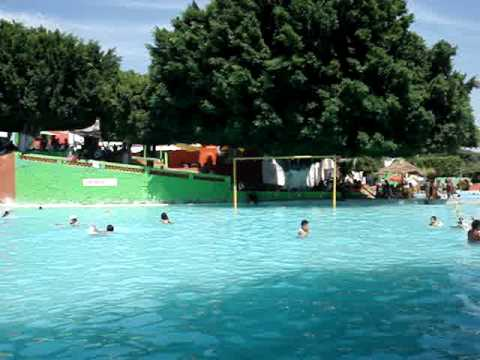
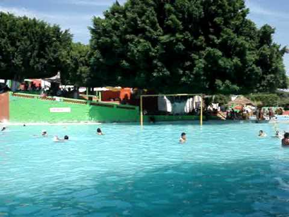
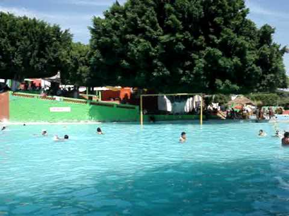

Carretera a Cuatla KM 3.5 Izucar de Matamoros, Pue, tel.243 436 07 13.

km. 1 San Juan Epatle, Pue, tel.243 433 53 15/222 755 78 63 www.recreativocitlalitlan.com.
san Miguel Ayotla,San Felipe Xochiltepec,Pue.

San Carlos, Izucar de Matamoros,Pue.

Plaza de la constitucion #10 centro, Izucar de Matamoros,Pue.
Revolucion #1 Centro, Izucar de Matamoros, Pue.
Carretera Internacional Oaxaca #3 Barrio Los Reyes Izucar de Matamoro, Pue. tel.243 434 31 84.
Centenario #7 Col.Santa Cruz Tecoxo, Izucar de Matamoros,Pue.
Hidalgo #4 Col. Centro, Izucar de Matamoros, Pue.
Aquiles Serdan #2 Col. Centro, Izucar de Matamoros, Pue.
Niño Perdido #3 Col. Centro, Izucar de Matamoros,Pue.
Hidalgo #1 Col.centro, Izucar de Matamoros, Pue.
Morelos #19 local 3 Plaza Morelos, Col. Centro, Izucarde Matamoros, Pue, Tel.243 43692 90.
Benito Juarez #29A, Col. Centro, Izucar de Matamoros, Pue.tel.243 436 05 97 www.musicalesprados.com.
Carretera Cuautla Lote 17 Col. El Mirador,A 1.5KM. Del Crucero,Izucar de Matamoros, Pue.Tel.243 43271 75/243 432 71 401.

Allende #22 Col.Centro,Izucar de Matamoros,Pue.Tel.243 436 08 58/243 436 00 40.
Carretera CuautlaLote 17 Col. El Mirador,A 1.5KM. Del Crucero,Izucar de Matamoros, Pue.Tel.243 43271 75/243 432 71 401.